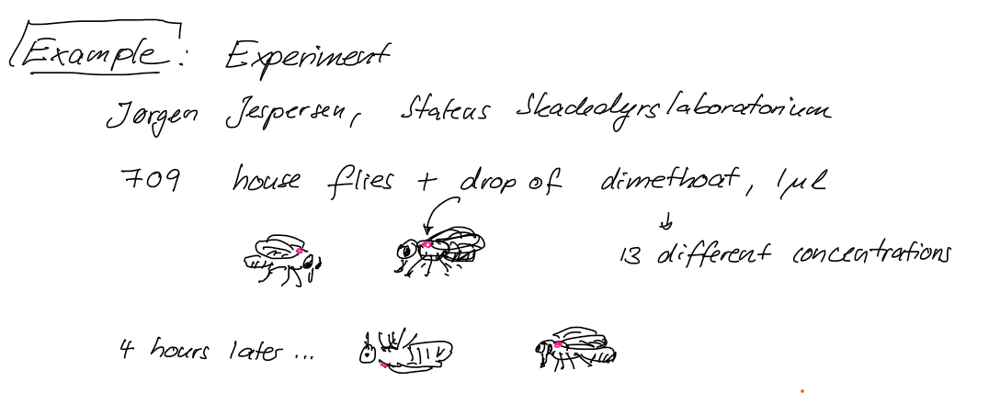
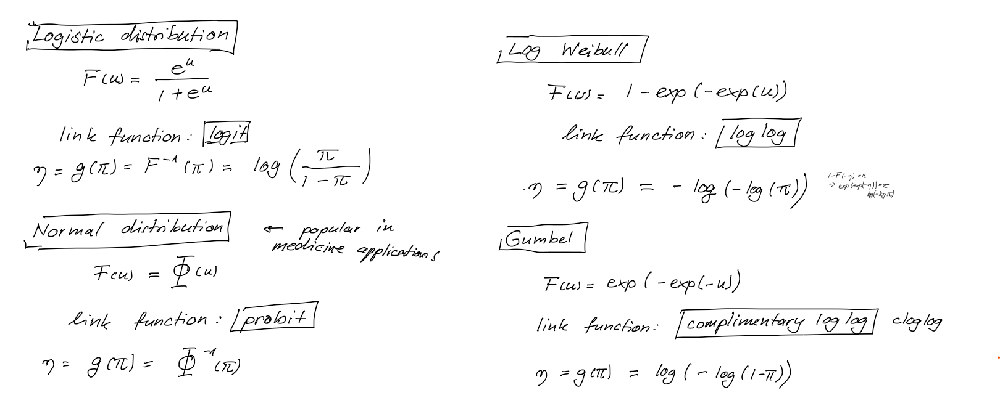
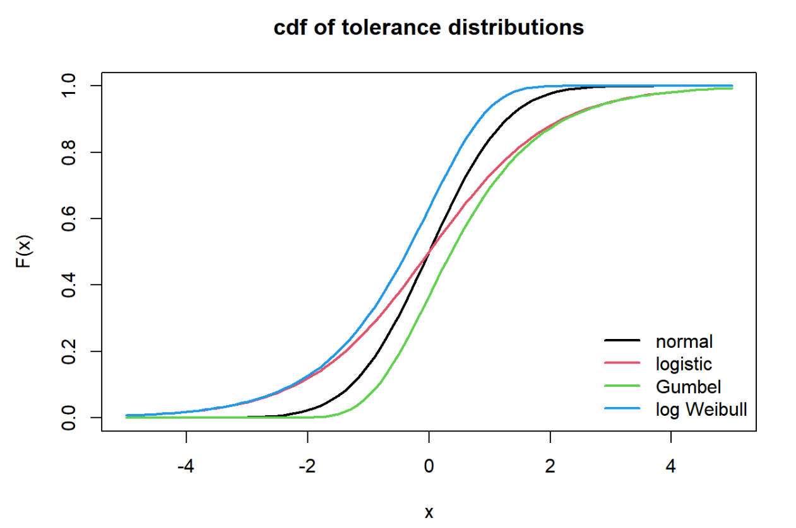

Tricking MathJax with invisible \(a^2+b^2\)
\[ \newcommand{\ps}[1]{\class{fragment}{#1}} \]
Outcomes:
unaggregated data: \(Y \in \{0, 1\}\)
Each \(Y_j\) comes from one Bernoulli experiment, \(\mathrm{P}(Y_j = 1) =\pi_j\).
aggregated data:
\(m_j\) size of repeated Bernoulli experiment, \(Y_j\): observed proportion
\(mY_j \sim \mathrm{Bin}(m, \pi_j)\)
Assume we have binary data \(Y_j\) with mean \(\pi_j\)
that depend on explanatory variables \(x_j\).
❓ Why don’t we just use a straightforward linear model? 🤔

Original data: \(\ y_1, \dots , y_n,\ \ n=36\) \[ m_j Y_j \sim \mathrm{Bin}(m_j, \pi_j), \quad j=1,\dots, n \]
\[ \mathrm{E}\,Y_j = \pi_j,\quad g(\pi_j) = \eta_j= \beta_0 +\beta_1 x_j \]
👉 Fit model to get \(\hat\beta_0\) and \(\hat\beta_1\),
\(\quad\) then solve \(g(\pi) = \hat\beta_0+\hat\beta_1 x\) for \(x\), where \(\pi = 0.5\)
In general, we estimate the \(LD_\alpha\) (proportion \(\tfrac{\alpha}{100}\) are killed) as: \[ \hat{LD}_\alpha = (g(\tfrac{\alpha}{100}) - \hat{\beta}_0)/\hat{\beta}_1 \]
e.g. with logit link, \(g(\pi) = \log\left({\pi}/({1-\pi})\right)\),
we get \(\quad\) \(g(0.5) = 0 \implies \hat{LD}_{50} = -\hat\beta_0/\hat\beta_1\) .
Using grouped data:
Someone has given you the fitted model, and you want to find the \(LD_{50}\), but the someone didn’t tell you how it was fitted?
👉 You can access the link function using function family() on the fitted model
It is natural in many cases to assume that the Bernoulli outcome \(Y_j\) is determined by a latent random variable \(Z_j\).
The outcome \(Y_j\) is positive if and only if \(Z_j\) exceeds a critical threshold, which can be defined to be zero (\(0\)). Thus,
\[ Y_j = \begin{cases} 1,& Z_j > 0\\ 0,& Z_j \leq 0 \end{cases}. \]
The variable \(Z_j\) itself depends linearly on the covariate vector \(\mathbf{x}_j\), and a random offset \(\varepsilon_j\sim F\), \[ Z_j=\mathbf{x}^{\mathsf{T}}\boldsymbol{\gamma} +\varepsilon_j\cdot\sigma \]
\(F\) is the tolerance distribution.
Mean of \(Y\) is \(\mathrm{E}\,Y=\pi\).
Let \(F\) be the tolerance distribution, i.e. the distribution of \(\varepsilon\).
\[ \begin{aligned} \pi &= \mathrm{P}(Y=1) = \mathrm{P}(Z>0)\\ &=\mathrm{P}(\mathbf{x}^T\boldsymbol{\gamma} + \varepsilon\sigma > 0)\\ &=\mathrm{P}(\varepsilon > - \mathbf{x}^T\boldsymbol{\gamma} / \sigma)\qquad (\text{write } \boldsymbol{\beta}:=\boldsymbol{\gamma} / \sigma)\\ &=1 - F( - \underbrace{\mathbf{x}^T\boldsymbol{\beta}}_{\eta}) \end{aligned} \]
Thus, the link function corresponding to tolerance distribution \(F\) is found by inverting \(\pi = 1-F(-\eta)\),
namely
\[ g(\pi) = \eta = -F^{-1}(1-\pi) \]
If \(F\) is symmetric around \(0\) then \[ \pi =1 - F( - \eta) = F(\eta) \]
thus the link function is \[ g(\pi) = F^{-1}(\pi) \]
Here, we use a Gaussian tolerance distribution and repeat each \(x\)-value five times
Then check if the latent variable is larger or smaller than 0
Look at the outcome
Now we estimate the proportion of positive outcomes by taking the mean, and draw them into the plot together with the theoretical value
Fitting the model - let’s see how well the predicted values agree with theory

Simulating from distributions that are not in base R: by inversion method.
For calculations you also need the cdf and inverse cdf (quantile function).

Variances:
Means: